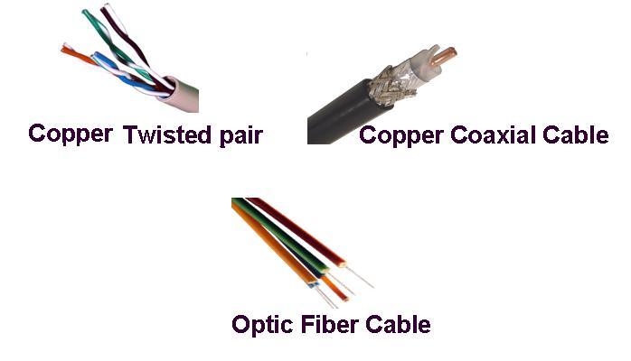
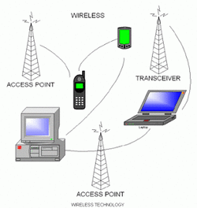

🧵 Transmission Media
📡 1. Overview
Transmission media are the physical pathways that connect computers, devices, and people on a network. They can be categorized into wired (guided) and wireless (unguided) types.
🔌 2. Wired Media
- Twisted Pair Cable: Commonly used in LANs. Categories: Cat5e, Cat6.
- Coaxial Cable: Used in cable TV and early Ethernet. Has a central conductor with shielding.
- Optical Fiber: Uses light to transmit data, offers high bandwidth, low attenuation, and immunity to EMI.

Fiber optic cables are ideal for long distances due to minimal signal loss and high data rate support.
📶 3. Wireless Media
- Radio Waves: Used in radio, TV, and Wi-Fi. Frequencies < 1 GHz are ideal for long-distance transmission.
- Microwaves: Used in satellite and point-to-point links. Typically needs line-of-sight.
- Infrared: Short-range, used in remote controls and some short-range communication.

📈 4. Comparison of Media
| Medium | Bandwidth | Distance | EMI Resistance | Cost |
|---|
| Twisted Pair | Low–Medium | 100m | Low | Low |
| Coaxial | Medium | 500m | Medium | Medium |
| Optical Fiber | High | Kilometers | High | High |
| Radio Waves | Low–Medium | 10s of km | Low | Low |
| Microwaves | High | Long (LOS) | Medium | High |
🌀 5. Animation: Fiber vs Coaxial Signal Propagation
This compares signal attenuation — coaxial (red) vs fiber optic (green).
🧪 6. Quiz Yourself
Q1: Which medium is immune to electromagnetic interference (EMI)?
Answer: Optical Fiber
Q2: Which wireless medium is used in satellite communications?
Answer: Microwaves
Q3: What is the main advantage of twisted pair cable?
Answer: Low cost and ease of installation